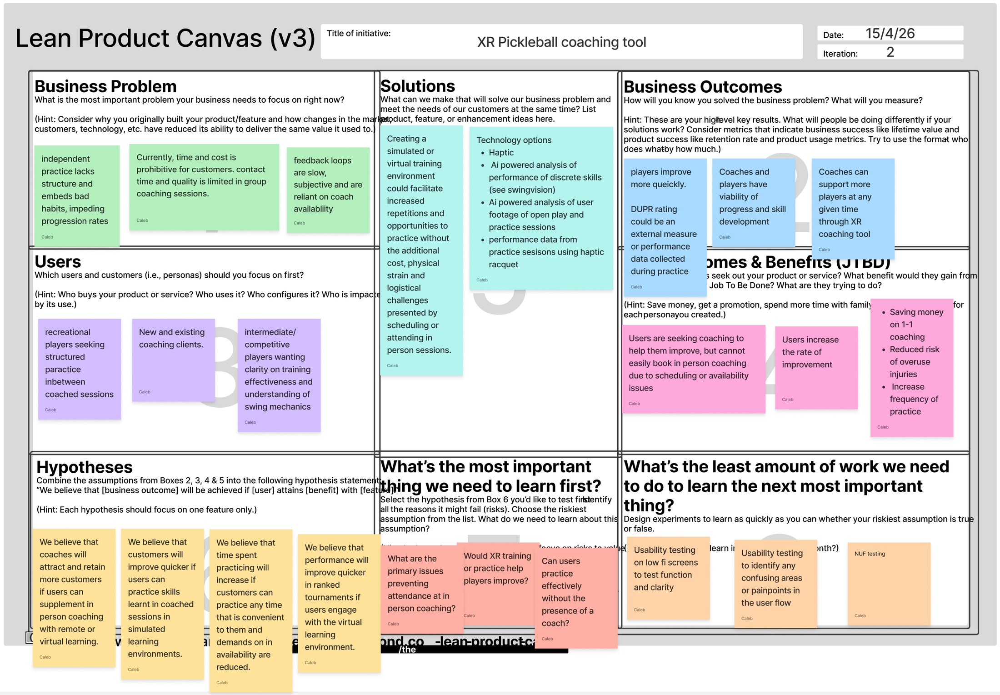
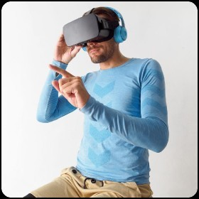
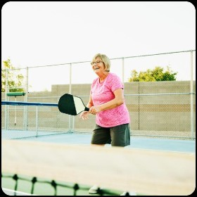
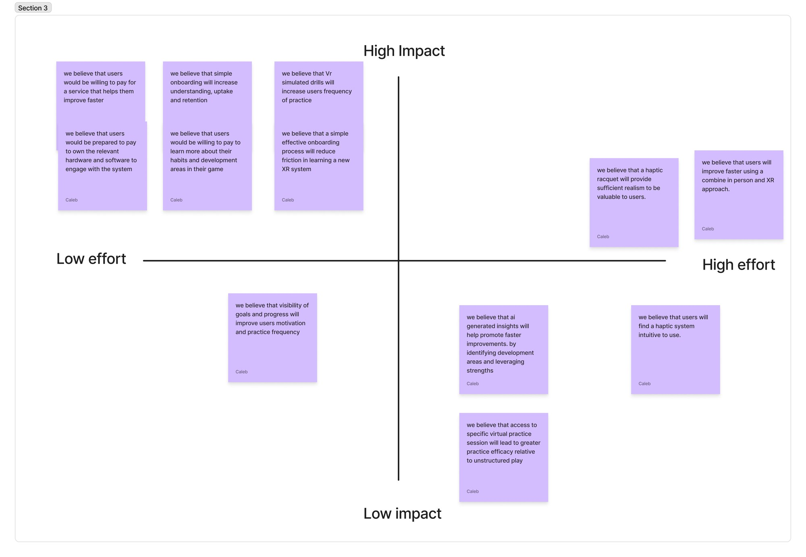

PCKL Lab
A coaching and performance platform for pickleball players — combining session content, data-driven analysis, and VR training drills. Built on deep research with elite coaches and players, and my most thorough end-to-end research process to date.

The problem
Pickleball is one of the fastest-growing sports in the world, but the gap between casual play and structured improvement remains wide. Players receive coaching in sessions and then go home with no way to revisit content, track progress, or continue training meaningfully between sessions.
Coaches face the same problem from the other side: they repeat the same instructions session after session because players have no reliable way to absorb and practise what they've been taught.
The design challenge: How do we bridge the gap between court coaching and independent practice — giving players the feedback, content, and tools to improve on their own terms?
Understanding the users Research
This project followed a Lean UX approach. I surveyed 49 players and interviewed four players and four coaches. Two of the coaches work at elite level and two with beginners and intermediates, chosen to find what holds true across a broad range of typical participants. Competitor analysis and background research set the market context.
Practice without structure embeds bad habits
Lack of structure was the most common barrier to improving, and players rated how structured their own practice is at 2.5 out of 5. Coaches described the consequence: repetition builds skill only when it is correct, and solo practice often reinforces errors.
Design response: a drill library that gives home practice a plan to follow, with progress tracked through each programme.
Players can’t tell whether their technique is right
78% of players feel unsure at least sometimes whether they are practising correctly. Coaches called it the gap between feel and real: players believe they are executing a shot correctly when they are not, and coaches struggle to make them see it.
Design response: performance analysis that makes the invisible visible, through shot placement maps, swing speed and success-rate trends.
- Observation and visibility limitsThere is a gap between what happens and what a coach can observe.
- The “feel vs real” perception gapSkill development is limited by a lack of self-awareness, not just a lack of instruction.
- Repetition, retention and behaviour changeThe biggest barrier is not learning. It is sustaining behavioural change over time.
- Practice context misalignmentLearning breaks down because practice environments don’t reflect real play.
- Guided, personalised feedbackPlayers need ongoing, personalised feedback loops, not one-off instruction.
Feedback has to be immediate, and nothing offers that for pickleball
Every coach stressed in-the-moment feedback: timing matters as much as content. Yet the tools on the market either analyse play after the fact or are VR trainers built for tennis.
Design response: VR drills with real-time shot feedback and target zones, designed for pickleball from the start.
| Product | Strength | Gap |
|---|---|---|
| SwingVision | AI shot analysis and tracked stats | App Store only |
| Racket Go | Club scheduling, rankings and scores | No performance insight or coaching feedback |
| Smart racket sensors | Swing speed, spin and impact location | No strategy or shot-selection data |
| Sense Arena (tennis) | VR drills against AI opponents | £29 a month, not built for pickleball |
| VR simulation training | Realistic physics and tactical training | £29 a month plus £69 haptic racket, not built for pickleball |
Defining the focus Assumptions · Hypotheses
Lean UX starts from what you believe and works out how to test it. I framed the opportunity on a Lean Product Canvas, revised it after the research, and used it to decide what to learn first.

Two players to design for
Proto-personas captured the two ends of the audience the research pointed to: a performance-driven player who wants proof of progress, and a newer, older player limited by cost, fatigue and confidence with technology.
Design response: onboarding and device set-up had to work for Valerie, while the analytics had to satisfy Jordan.

“I would rather practise and know I am improving; right now it is hard to tell if I am progressing.”
Hard to attend in-person coaching · improving too slowly

“I really enjoy playing and I would like to know I am getting better.”
Can’t play as often as she’d like · frequent coaching is a luxury · not confident with technology
From 29 assumptions to four hypotheses
I listed 29 assumptions across demand, business model, feasibility, value and adoption, turned them into 12 hypotheses, and mapped those by impact and effort. Four went forward for testing:
- Value: players with limited access to coaching will benefit from realistic VR drills with immediate feedback.
- Usability: a haptic racquet will improve perceived realism and timing.
- Feasibility: motion tracking can capture swing data accurately enough for meaningful insight.
- Behaviour change: showing progress over time will increase motivation and practice frequency.

Deciding what to build first
A bullseye diagram ranked every feature by how much it mattered to the test. Onboarding, quick navigation and performance data sat at the centre, so they were prototyped and tested first.
Design response: the companion app became the testable core. The XR simulator sat in the outer ring, so the prototype included a visualisation of the XR environment rather than a functional simulator to test.
Designing the solution Prototype
Onboarding
A four-step onboarding flow introduces the platform's core features before the player reaches the dashboard.


Home dashboard
The home screen surfaces the metrics players care about most — accuracy, DUPR rating, progress and session count — alongside a direct route back into their current drill and monthly goal tracking.

Practice sessions
The drill library lets players filter by skill level and pick up exactly where they left off. Progress bars and completion states give a clear picture of where they are in their programme.

VR training
The app's signature feature: a first-person VR environment where players practise specific shots against real court backgrounds. Target zones highlight landing areas, real-time feedback appears on shot completion, and XP reinforces progress.
Performance analysis
Three data views give players a complete picture of their game: shot placement mapping, racquet head speed, and success rate trend over time.


AI Insights
The AI Insights tab translates raw data into actionable recommendations — surfacing patterns like optimal practice times and consistency intervals, giving players a clear next step rather than just a number.

Key design decisions
DUPR integration
DUPR (Dynamic Universal Pickleball Rating) is the sport's official global rating system. Research showed it was the single number players cared most about. Connecting it to in-app performance data gave players a direct line between practice behaviour and competitive outcome.
VR as the bridge, not the gimmick
Each VR drill corresponds directly to a coach-assigned exercise, so the technology serves the methodology rather than replacing it. Target zones and XP were kept minimal to avoid gamification overriding the learning purpose.
AI trust through transparency
Research surfaced scepticism about AI coaching recommendations. The Insights tab addresses this by showing the data behind each recommendation and framing outputs as patterns rather than instructions. Players are given agency — the AI suggests, the player decides.
Testing and outcomes Test
Usability scores
I tested a low-fidelity prototype with three participants and measured it with the System Usability Scale (SUS), setting 75 as the validation threshold.
| Participant | SUS score | Interpretation |
|---|---|---|
| P1 | 85.0 | Excellent usability |
| P2 | 80.0 | High / good usability |
| P3 | 75.0 | Good usability |
| Average | 80.0 | High usability |
Key takeaways
- All participants met or exceeded the validation threshold of 75
- The system consistently falls within “good to excellent” usability
- The average score of 80 indicates a strong overall user experience
What testing told us
What worked
- Usefulness for training and navigating to drills both scored 5.0 out of 5
- Confidence after onboarding and confidence that devices were set up correctly both scored 4.7
- “This would be useful for my training.”
What needs work
- Icons were unclear to all three participants
- Onboarding lacked back, skip and exit controls
- Nothing confirmed that a session had been completed
- Device management was not obvious: “I would have pressed the goggles first.”
The finding that matters most
The core value was the least clear part. Understanding the performance feedback scored 3.0 out of 5, the lowest of any measure: “I can’t see what the performance data looks like.” Clear visualisations, labelled controls and a line from data to what to do next became the top priority for the final screens.
What changed after testing
The final screens shown above already include fixes from this round of low-fidelity testing:
- “I can’t see what the performance data looks like.” Performance analysis now has three dedicated views: a shot placement map, racquet head speed and a success-rate trend.
- “I don’t know what that icon is.” Every navigation icon now carries a text label.
Next step: a pilot with players and coaches
The Lean Strategy Canvas set out how success would be measured in a pilot: five coaches actively using the system with their players, a 70% drill completion rate among early adopters, and measurable improvement in 60% of pilot users over a set period.
Reflection
PCKL Lab is the project where I most clearly saw the value of thorough upfront research. Because the problem was well defined before any design work began, decisions in the later stages felt grounded rather than speculative. Every feature can be traced back to something a coach or player told me.
Usability testing so far has covered the companion app. If I were to continue this project, the next priority would be building out the XR simulation environment so it can be included in the testing flow, then testing the VR interaction model itself with players — particularly whether shot feedback is legible under the cognitive load of an active training session.